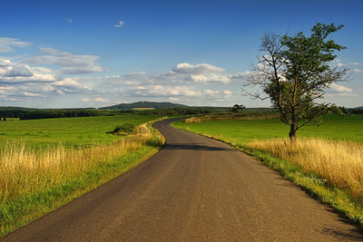

Introdução
A relação entre o campo e a cidade é crucial para o desenvolvimento sustentável e equilibrado da sociedade. As interações entre áreas urbanas e rurais proporcionam benefícios mútuos, contribuindo para a qualidade de vida e o crescimento econômico.
Benefícios da Interação
Produção de Alimentos
O campo fornece alimentos essenciais para a população urbana, enquanto as cidades oferecem mercados e infraestrutura para distribuição.
Inovação e Tecnologia
Cidades impulsionam a inovação tecnológica, que pode ser aplicada para melhorar práticas agrícolas e a vida no campo.
Qualidade de Vida
A troca de recursos e conhecimentos entre o campo e a cidade contribui para uma melhor qualidade de vida para todos os habitantes.
Adicional
Entender e valorizar a interdependência entre o campo e a cidade é fundamental para promover um desenvolvimento sustentável e harmonioso. A colaboração entre essas áreas é essencial para garantir o bem-estar de toda a população.